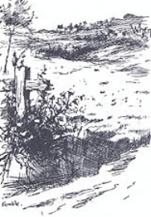

Inside Quarles Farm

picture
courtesy of "Mark Twain in His Times"
"In the
corner of the front yard were a dozen lofty hickory
trees and a dozen black walnuts...Down a piece,
abreast the
house, stood a little log cabin against the rail fence; and there the
woody hill fell sharply away,
past the barns, the corncrib, the
stables and the tobacco curing house, to a limpid brook which sang
along
over its gravelly bed and curved and frisked in
and out and
here and there and yonder in the deep shade
of overhanging foliage and vines...In the little log
cabin lived a bedridden
white-headed slave woman whom
we visited daily and looked upon with awe, for we believed
she was upward of a thousand years old and
had
talked with Moses...We called her 'Aunt' Hannah...We had a faithful and
affectionate good friend, ally
and advisor, in 'Uncle
Dan'l,' a middle-aged slave." Autobiography, 5-6
back
to exterior